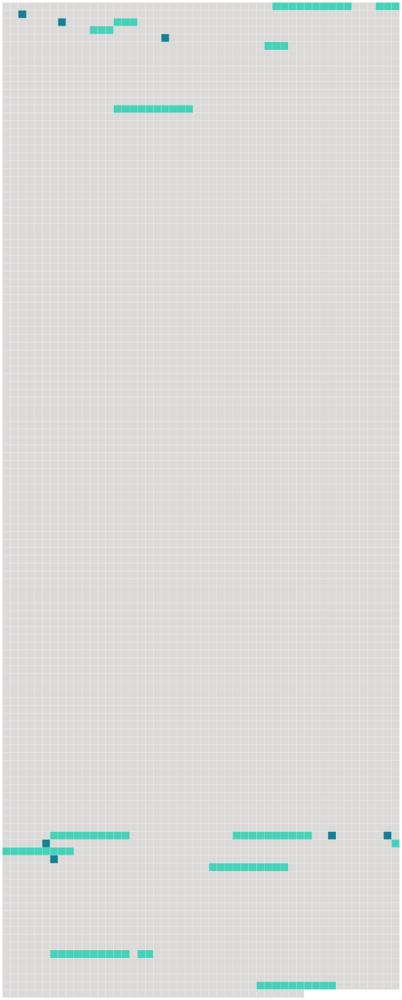

Longueur nb maillons : 20 mentions |
|
Article R15
Article R15-1 [1 phrases]
Lorsqu' [il] envisage de refuser l'habilitation, [le procureur général] en informe l'intéressé, en lui précisant qu'il peut, dans un délai de quinze jours, prendre connaissance de son dossier et être entendu, le cas échéant, avec l'assistance d'un conseil de son choix.
Article R15-2
[Il] entend préalablement l'officier de police judiciaire qui peut prendre connaissance du dossier relatif aux faits qui lui sont reprochés et se faire assister d'un conseil de choix. [1 phrases]
[Le procureur général] peut, à tout moment, abréger la durée de la suspension. [7 phrases]
Article R15-4 [78 phrases]
Pour chacun de ces agents, une demande d'habilitation est adressée [au procureur général près la cour d'appel de Paris] par le magistrat délégué aux missions judiciaires de la douane.
Article R15-33-8
Lorsqu' [il] envisage de refuser l'habilitation, [il] en informe l'intéressé en lui précisant qu'il peut, dans un délai de quinze jours, prendre connaissance de son dossier et être entendu, le cas échéant, avec l'assistance d'un conseil de son choix.
Article R15-33-9
[Il] entend préalablement l'agent des douanes, qui peut prendre connaissance du dossier relatif aux faits qui lui sont reprochés et se faire assister d'un conseil de son choix. [1 phrases]
[Le procureur général près la cour d'appel de Paris] peut, à tout moment, abréger la durée de la suspension. [11 phrases]
Article R15-33-15
[Celui -ci] établit la notation après avoir recueilli, le cas échéant, les observations des présidents de la chambre de l'instruction de Paris et des autres procureurs généraux concernés. [3 phrases]
Article R15-33-17 |
 |
Il est possible de télécharger la ressource sur la page Ortolang |
Si vous avez des questions ou vous voyez des erreurs, merci d'envoyer un mail à silvia.federzoni89@gmail.com |